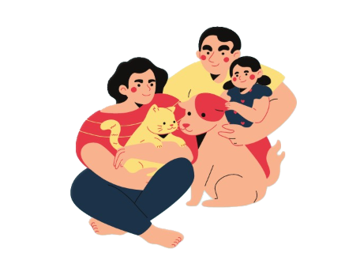
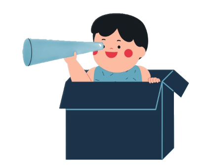
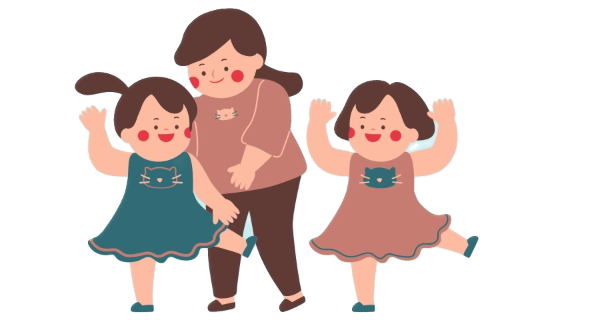
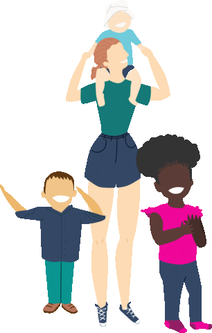
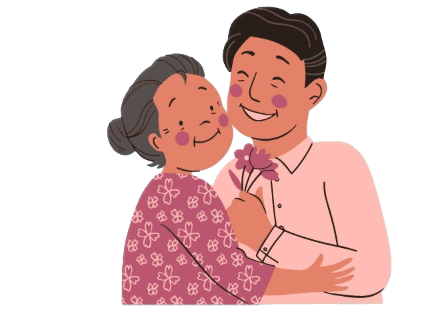
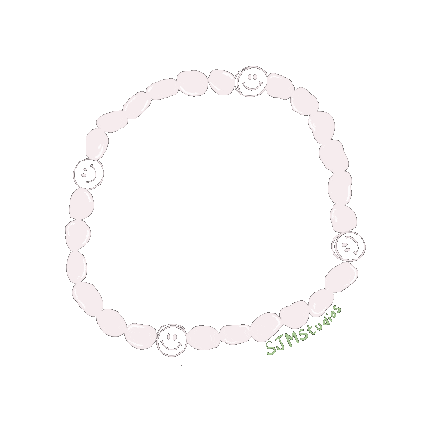
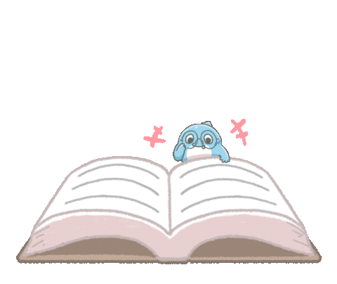

Quotes to think
Quotes are melodies in litterature, a way of talking of long matters in a short amount of time
"Family is not an important thing. It's everything."

 "Home is where you are loved the most and act the worst."
"All happy families are alike; each unhappy family is unhappy in its own way."
🏵"If you look at what you have in life, you'll always have more. If you look at what you don't have in life, you'll never have enough." -Oprah Winfrey
"When you reach the end of your rope, tie a knot in it and hang on."

A few cute short stories
Family is where memories are held, where love and tolerance are preserved. While you read these short stories you may be able to see your family's value if you look at the bright side of things.
Tiếng Việt
Gia đình là chốn đi về của ký ức, là bến đỗ neo giữ yêu thương của đời người. Đọc mấy mẩu truyện ngắn dưới đây, có lẽ bạn sẽ biết trân quý tổ ấm của mình hơn.
Adopted child / Con nuôi

A teacher shows the whole class the picture of a family. There is a boy in the picture who has a different skin color from everyone else. Another boy stands up, asks: “Is he an adopted child, teacher?”. The teacher smiles, says: “How do you know?”. That
boy shakes his head, then sits down. Suddenly, a girl shyly says: “Teacher, I know a lot a bout adopted children!”. The whole class starts to whisper and another child asks: “So, what is an adopted child?”. The girl confidently stands
right up, throws out her chest, says: “If you are an adopted child, you are made from your mother's heart, not her stomach!”
Tiếng Việt
Cô giáo cho cả lớp xem bức ảnh chụp một gia đình. Có một cậu bé trong ảnh có màu da khác với mọi người. Một bạn nam đứng dậy: “Thưa cô, cậu ấy là con nuôi phải không ạ?”. Cô khẽ mỉm cười:
“Tại sao con biết?”. Bạn nam lắc đầu, tiu nghỉu ngồi xuống. Một cô bé bẽn lẽn thưa: “Thưa cô, con biết rất nhiều về con nuôi ạ!”. Có tiếng vặn hỏi ở dưới lớp: “Thế con nuôi là gì?”. Cô bé đứng thẳng dậy, ưỡn ngực, vẻ mặt tươi tỉnh, hai
bím tóc lúc lắc, lúc lắc, dõng dạc nói: “Con nuôi nghĩa là mình lớn lên từ trong tim mẹ chứ không phải từ trong bụng!”.
A parent's love / Tình yêu của bố

My Dad has Alzheimer’s, his memory becomes poorer day by day, he cannot even recognize me as his daughter. One day, my Dad and I went to a restaurant. In the end, there were 2 dumplings left on the plate. He immediately took both and put them in his pocket.
I was ecstatic. Then he said: “These two are for my daughter, she likes dumpling best.” Time flows, parents will become old, and get sick. They can forget everything, but the love for their children is always there, forever...
Tiếng Việt
Bố tôi mắc chứng Alzheimer, trí nhớ càng ngày càng kém, đến con trai mình cũng chẳng nhận ra. Một hôm tôi đưa ông đi ăn hàng, trong đĩa còn lại hai cái bánh bao, bố liền cầm lấy cho vào
túi. Tôi rất sững sờ. Rồi bố nói: "Hai cái này để dành cho con trai tôi, nó thích ăn nhất cái này." Thời gian trôi đi, cha mẹ rồi cũng sẽ già, và đổ bệnh. Có lúc, dù bản thân họ chẳng nhớ, quên đi tất cả nhưng tình yêu đối với con cái
thì luôn thường trực…
The jade bracelet / Vòng cẩm thạch

Dad had always wanted to give Mom a nice jade bracelet. Mom’s hand was fair and smooth, looking very nice with a bracelet. But every time Dad intended to buy one, Mom would prevent him from doing it. She said: “Let's save money to buy books for the kids".
Time flew, and Mom's hand turned brown, calloused because of the lofty sacrifice she gave to her family. Years later, my sister and I have grown up, had family, and even had children. In all of those years, mother still hadn’t worn a Jade
bracelet, not once.
On Mom's birthday, we gave her a beautiful Jade bracelet. She was so happy, she kept on chuckling. However, she put it in a wardrobe, only looking at it sometimes for a little while. I asked
Mom: “Why don't you wear it?”. Mom smiled: “I'm getting old, and my hands are getting shaky, I'm happy with just looking at it!”. At that point, my sister and I looked at each other and burst into tears...
Tiếng Việt
Cha luôn ao ước tặng mẹ một chiếc vòng cẩm thạch. Tay mẹ trắng nõn nà, đeo vòng rất đẹp. Nhưng mỗi khi cha định mua, mẹ lại can. Mẹ bảo: “Để tiền ấy mua sách vở cho tụi nhỏ”. Bao nhiêu năm
qua đi, bàn tay mẹ đã sạm đen, chai sạn vì sương gió cuộc đời. Bao nhiêu năm qua đi, chị em tôi cũng trưởng thành cả, rồi lập gia đình, rồi sinh con. Bao nhiêu năm ấy, mẹ vẫn chưa một lần đeo vòng cẩm thạch.
Ngày sinh nhật mẹ,
chúng tôi mua tặng bà một chiếc vòng đẹp nhất. Mẹ vui lắm, cứ cười mãi. Bà cất kỹ trong tủ, chỉ thi thoảng mới mang ra ngắm nghía một lát. Tôi hỏi: “Sao mẹ không đeo?”. Mẹ nheo mắt cười: “Mẹ già rồi, tay run lắm, chỉ cần nhìn cũng thấy
vui”. Chị em tôi chẳng ai bảo ai, lặng lẽ đưa mắt nhìn nhau mà rưng rưng lệ.
